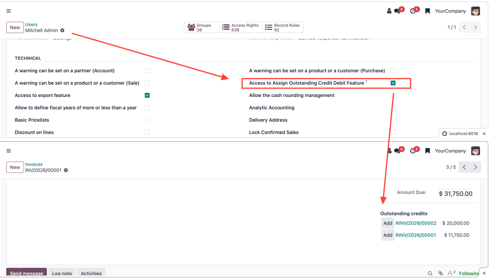
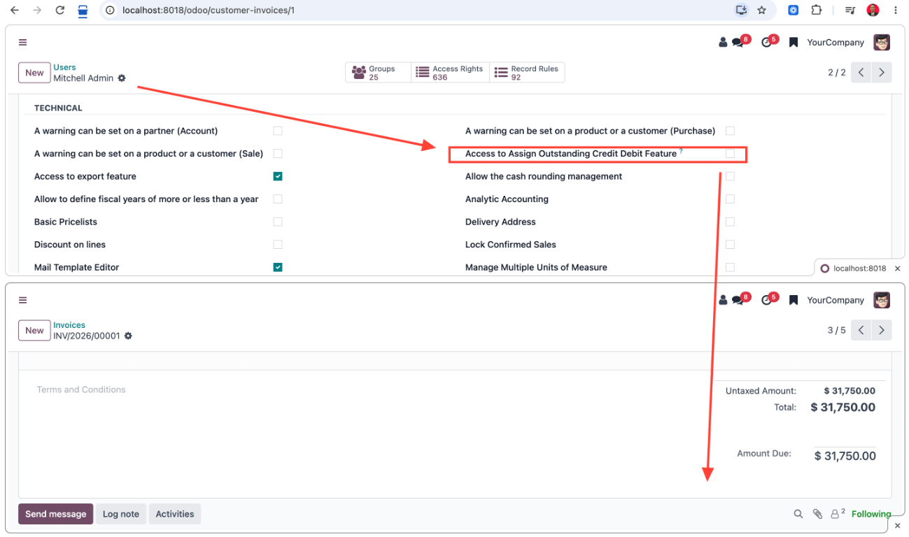

ODOO ACCOUNTING / ACCESS CONTROL
Control visibility and assignment of outstanding credits and debits on invoices and bills using a dedicated user group.
With developer mode enabled, open the user's access rights under Technical and enable Access to Assign Outstanding Credit Debit Feature. Keep the user's existing accounting role, then reload the browser.

Without the group, the heading, Add buttons, journal references and outstanding amounts are hidden. Direct calls to the assign method are also blocked.

BY ARGA DWIKI SUWANDI
Send your Odoo version and issue. No credentials or sensitive data.
argadwiki632@gmail.comIndependent add-on by Arga Dwiki Suwandi. Odoo is a trademark of Odoo S.A.